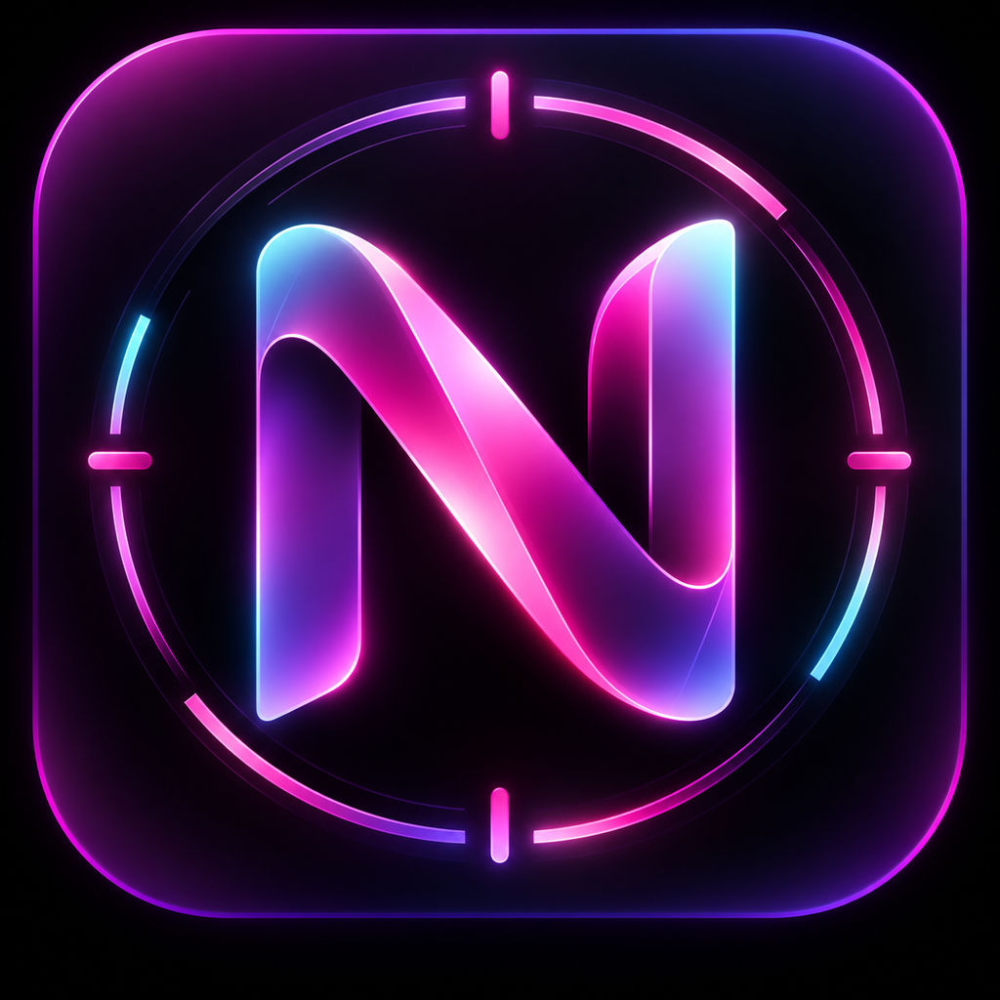

Terms of Service
Effective date: October 4, 2026
Welcome to Nyra Control Center. These Terms of Service govern your use of the Nyra Control Center web application and related services. By accessing or using the service, you agree to these Terms.
1. Purpose of the service
Nyra Control Center is a content management tool designed to help creators prepare, manage and publish content to supported social media platforms. Features may include TikTok account connection, content preparation, video and photo upload, caption and hashtag preparation, draft submission, publishing workflows, account information and performance data.
2. TikTok integration
Nyra Control Center may connect to TikTok through official TikTok developer APIs. Users authorize access through TikTok's official authentication system. Nyra Control Center does not request or store a user's TikTok password. Access is limited to permissions explicitly authorized by the user.
Nyra Control Center is an independent application and is not affiliated with, endorsed by, or operated by TikTok or ByteDance. TikTok's own terms, policies and community guidelines continue to apply.
3. User responsibilities
Users are responsible for content they upload, prepare or publish using Nyra Control Center. Users must ensure that their content complies with applicable laws, platform policies and third-party intellectual property rights. Users may only connect accounts they own or are authorized to manage.
4. Content ownership
Users retain ownership of content they submit through Nyra Control Center. The service may temporarily process content when necessary to perform requested features such as uploading or publishing.
5. Third-party services
Nyra Control Center relies on third-party platforms and APIs, including TikTok. Availability of features may therefore depend on those third parties. Features may change or become unavailable if a third-party provider changes its API, policies or technical requirements.
6. Account security
Users are responsible for maintaining the security of their devices and connected accounts. If unauthorized access is suspected, users should revoke the application's permissions and secure the affected account.
7. Availability and modifications
Nyra Control Center may be modified, updated or temporarily unavailable for maintenance, development or technical reasons. No guarantee is made that the service will always operate without interruption or errors.
8. Limitation of liability
Nyra Control Center is provided on an "as is" and "as available" basis. To the extent permitted by applicable law, the service provider shall not be liable for indirect losses resulting from third-party outages, failed or delayed publications, platform restrictions, external data loss or unauthorized use caused by compromised user devices or credentials.
9. Suspension or termination
Access may be suspended or terminated if the service is used unlawfully, abusively or in violation of these Terms. Users may stop using the service and revoke connected platform permissions at any time.
10. Privacy
Personal information processed through Nyra Control Center is handled according to the Privacy Policy.
11. Changes to these Terms
These Terms may be updated when the application, applicable laws or third-party platform requirements change. The effective date above indicates the latest version.
12. Contact
For questions regarding these Terms, contact the operator of Nyra Control Center through the contact information published with the application.